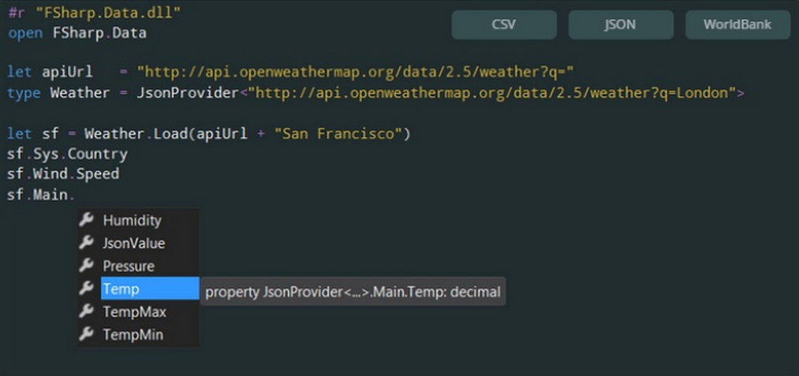

Full name: index.a
Full name: index.b
val float : value:'T -> float (requires member op_Explicit)
Full name: Microsoft.FSharp.Core.Operators.float
--------------------
type float = System.Double
Full name: Microsoft.FSharp.Core.float
--------------------
type float<'Measure> = float
Full name: Microsoft.FSharp.Core.float<_>
Full name: index.c
Full name: index.r
val ref : value:'T -> 'T ref
Full name: Microsoft.FSharp.Core.Operators.ref
--------------------
type 'T ref = Ref<'T>
Full name: Microsoft.FSharp.Core.ref<_>
Full name: Microsoft.FSharp.Core.ExtraTopLevelOperators.printfn
type Point =
new : x:int * y:int -> Point
member X : int
member Y : int
Full name: index.Point
--------------------
new : x:int * y:int -> Point
val int : value:'T -> int (requires member op_Explicit)
Full name: Microsoft.FSharp.Core.Operators.int
--------------------
type int = int32
Full name: Microsoft.FSharp.Core.int
--------------------
type int<'Measure> = int
Full name: Microsoft.FSharp.Core.int<_>
Full name: index.Point.X
Full name: index.Point.Y
Full name: index.MyMod.myFunction
Full name: index.MyMod.myFunction2
Full name: index.MyMod.highOrderFunction
Full name: index.MyMod.recursiveFuncion
Full name: index.MyMod.memoizeFunction
type Dictionary<'TKey,'TValue> =
new : unit -> Dictionary<'TKey, 'TValue> + 5 overloads
member Add : key:'TKey * value:'TValue -> unit
member Clear : unit -> unit
member Comparer : IEqualityComparer<'TKey>
member ContainsKey : key:'TKey -> bool
member ContainsValue : value:'TValue -> bool
member Count : int
member GetEnumerator : unit -> Enumerator<'TKey, 'TValue>
member GetObjectData : info:SerializationInfo * context:StreamingContext -> unit
member Item : 'TKey -> 'TValue with get, set
...
nested type Enumerator
nested type KeyCollection
nested type ValueCollection
Full name: System.Collections.Generic.Dictionary<_,_>
--------------------
System.Collections.Generic.Dictionary() : unit
System.Collections.Generic.Dictionary(capacity: int) : unit
System.Collections.Generic.Dictionary(comparer: System.Collections.Generic.IEqualityComparer<'TKey>) : unit
System.Collections.Generic.Dictionary(dictionary: System.Collections.Generic.IDictionary<'TKey,'TValue>) : unit
System.Collections.Generic.Dictionary(capacity: int, comparer: System.Collections.Generic.IEqualityComparer<'TKey>) : unit
System.Collections.Generic.Dictionary(dictionary: System.Collections.Generic.IDictionary<'TKey,'TValue>, comparer: System.Collections.Generic.IEqualityComparer<'TKey>) : unit
Full name: Microsoft.FSharp.Core.Operators.not
static member MyFunction : ?x:int * ?y:int -> int
static member MyFunction2 : [<ParamArray>] rest:int array -> int
Full name: index.MyClass
Full name: index.MyClass.MyFunction
Full name: Microsoft.FSharp.Core.Operators.defaultArg
Full name: index.MyClass.MyFunction2
type ParamArrayAttribute =
inherit Attribute
new : unit -> ParamArrayAttribute
Full name: System.ParamArrayAttribute
--------------------
ParamArrayAttribute() : unit
Full name: Microsoft.FSharp.Core.array<_>
member Clone : unit -> obj
member CopyTo : array:Array * index:int -> unit + 1 overload
member GetEnumerator : unit -> IEnumerator
member GetLength : dimension:int -> int
member GetLongLength : dimension:int -> int64
member GetLowerBound : dimension:int -> int
member GetUpperBound : dimension:int -> int
member GetValue : [<ParamArray>] indices:int[] -> obj + 7 overloads
member Initialize : unit -> unit
member IsFixedSize : bool
...
Full name: System.Array
Full name: Microsoft.FSharp.Collections.Array.reduce
Full name: index.index
| Var of string
| Fun of string * Term
| App of Term * Term
Full name: index.Term
val string : value:'T -> string
Full name: Microsoft.FSharp.Core.Operators.string
--------------------
type string = String
Full name: Microsoft.FSharp.Core.string
Full name: index.formatTerm
Full name: Microsoft.FSharp.Core.ExtraTopLevelOperators.sprintf
| Rectangle of width: float * length: float
| Circle of radius: float
| Prism of width: float * float * height: float
Full name: index.Shape
val float : value:'T -> float (requires member op_Explicit)
Full name: Microsoft.FSharp.Core.Operators.float
--------------------
type float = Double
Full name: Microsoft.FSharp.Core.float
--------------------
type float<'Measure> = float
Full name: Microsoft.FSharp.Core.float<_>
Full name: index.matchShapeList
Full name: Microsoft.FSharp.Core.Operators.failwith
String.Split(separator: string [], options: StringSplitOptions) : string []
String.Split(separator: char [], options: StringSplitOptions) : string []
String.Split(separator: char [], count: int) : string []
String.Split(separator: string [], count: int, options: StringSplitOptions) : string []
String.Split(separator: char [], count: int, options: StringSplitOptions) : string []
module List
from Microsoft.FSharp.Collections
--------------------
type List<'T> =
| ( [] )
| ( :: ) of Head: 'T * Tail: 'T list
interface IEnumerable
interface IEnumerable<'T>
member GetSlice : startIndex:int option * endIndex:int option -> 'T list
member Head : 'T
member IsEmpty : bool
member Item : index:int -> 'T with get
member Length : int
member Tail : 'T list
static member Cons : head:'T * tail:'T list -> 'T list
static member Empty : 'T list
Full name: Microsoft.FSharp.Collections.List<_>
Full name: Microsoft.FSharp.Collections.List.contains
Full name: index.( |Greeting|_| )
Full name: index.( |Split|_| )
Full name: index.evenOrOdd
Full name: index.( |Even|Odd| )
Full name: index.( |Even|Odd| )
type MeasureAttribute =
inherit Attribute
new : unit -> MeasureAttribute
Full name: Microsoft.FSharp.Core.MeasureAttribute
--------------------
new : unit -> MeasureAttribute
type km
Full name: index.km
type mi
Full name: index.mi
type h
Full name: index.h
{x: float<'u>;
y: float<'u>;
z: float<'u>;}
Full name: index.Vector3D<_>
Full name: index.v1
Full name: index.v2
Full name: index.v3
F# for Scala developers
Walking into the dark side

Scala and F# Madrid Meetup groups
How much do Scala and F# look like?
- Bring (non-strict) Functional Programming to Java and .NET
- Full compatibility with their host platforms
- Static safety with type inference
How much do Scala and F# differ?
Scala
- Embraces both Object Oriented and Functional Programming
- Syntax designed not to scare OOP developers: curly-brace
- Language team works separately from Java team
How much do Scala and F# differ?
F#
- Multi-paradigm but functional-first
- Syntax inherited from Ocaml: indentation sensitive
- Two flavors: project-linked (.fsproj, .fs) and scripts (.fsx)
- Language team worked together with .NET team
Thanks to this, things like generics and tail-call instructions are native to the platform
Let's see some code examples...
Constants, Variables and null
Scala
1: 2: 3: 4: 5: 6: 7: 8: 9: 10: 11: 12: |
|
F#
1: 2: 3: 4: 5: 6: 7: 8: 9: 10: 11: 12: 13: 14: 15: 16: 17: 18: 19: 20: |
|
Functions
Scala
1: 2: 3: 4: 5: 6: 7: 8: 9: 10: 11: |
|
Scala
Memoize Pattern
1: 2: 3: 4: 5: 6: 7: 8: 9: 10: |
|
F#
1: 2: 3: 4: 5: 6: 7: 8: 9: 10: 11: 12: 13: 14: 15: 16: 17: 18: 19: |
|
F#
Optional and rest parameters are only accepted in non-curried class methods
1: 2: 3: 4: 5: 6: 7: 8: 9: 10: |
|
Imperative loops
Scala
1: 2: 3: 4: 5: 6: 7: 8: 9: |
|
F#
As in Scala, break and continue are missing from the language. Recursion or collection transformation functions are preferred.
1: 2: 3: 4: 5: 6: 7: |
|
Classes
Scala
Classes are very powerful in Scala and different from F#:
- Singleton objects
- Traits and abstract types
- Compound types and mixins
F#
- F# doesn't focus on classes
- Their main purpose is compatibility with .NET Base Class Library
- Mostly same functionality as C# with different Syntax and some additional features (like primary constructors)
- Interfaces are just abstract classes without default method implementations
- No mixins, only multiple interface implementation is possible
- Extension methods are allowed
F#
WIP: Class example
F# Tuples and Records
In F#, tuples, records (lightweight classes) and discriminated unions (ADT) are usually preferred. With the logic separated in module functions.
WIP: Examples
Algebraic Data Types and Pattern Matching
Scala
1: 2: 3: 4: 5: 6: 7: 8: 9: 10: 11: 12: |
|
F#
1: 2: 3: 4: 5: 6: 7: 8: 9: 10: 11: 12: 13: 14: 15: 16: |
|
F# (a more contrived example)
1: 2: 3: 4: 5: 6: 7: 8: 9: 10: 11: 12: 13: |
|
Extractor Objects
Scala
1: 2: 3: 4: 5: 6: 7: 8: 9: 10: 11: 12: 13: 14: 15: 16: 17: |
|
Scala
Combining patterns
1: 2: 3: 4: 5: 6: |
|
Active Patterns
F#
1: 2: 3: 4: 5: 6: 7: 8: 9: 10: 11: 12: 13: 14: 15: 16: 17: |
|
F#
Exhaustive pattern
1: 2: 3: 4: 5: 6: 7: 8: 9: |
|
Kitty Break

Generics
WIP
F# generics are very similar to Scala, with some differences:
- Automatic Generalization
- Constraints
- Statically Resolved Type Parameters
Collections
WIP
- Array (ResizeArray), List, Lazy Sequence
- Transformation functions
- Comprehensions
Scala Comprehensions and F# Computation Expressions
WIP
And now for a couple of unique F# features...
Measure Units
1: 2: 3: 4: 5: 6: 7: 8: 9: 10: 11: 12: 13: 14: 15: |
|
Measure annotations disappear after compilation and thus they have no performance penalty
Type Providers

Other platforms
WIP
- JavaScript
- Mobile platforms